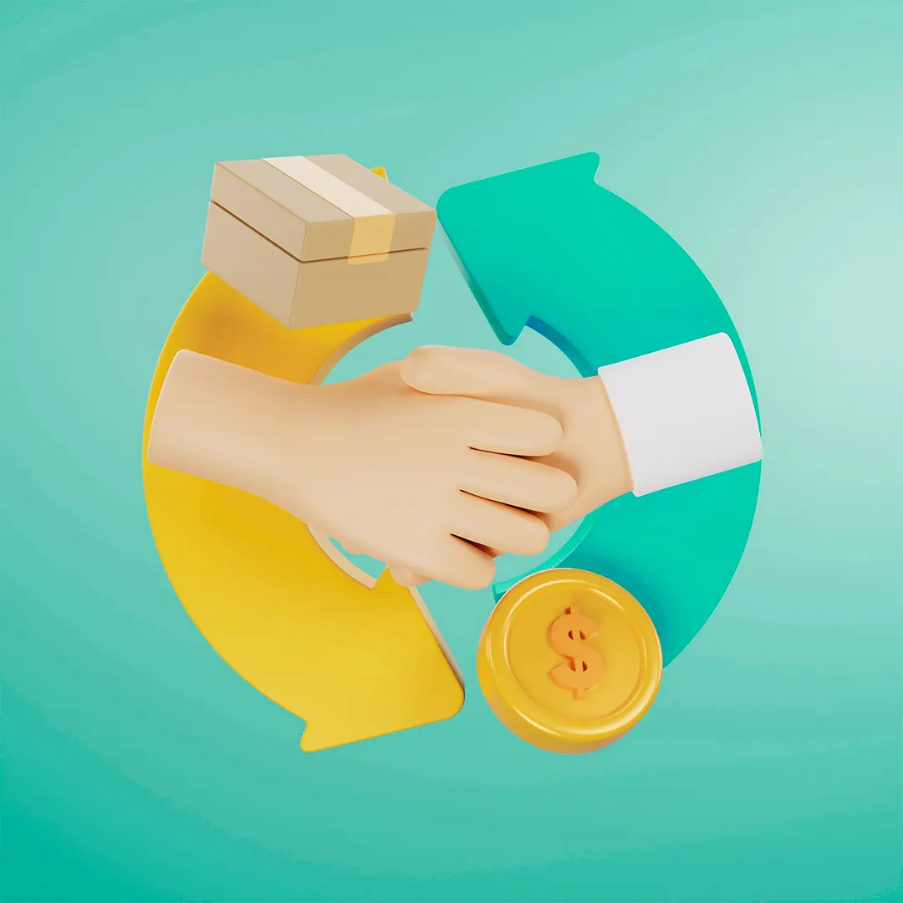

Embora ambos os modelos de marketing, B2B (Business to Business) e B2C (Business to Consumer), compartilhem a meta de gerar vendas e reconhecimento de marca, suas dinâmicas e processos diferem substancialmente. Essas diferenças não se resumem apenas a apelos emocionais ou racionais, mas abrangem aspectos estruturais, como o ciclo de vendas, a participação de múltiplos tomadores de decisão e a escolha de canais de comunicação.
Processo de Decisão e Envolvimento de Partes Interessadas
B2B: Decisões Coletivas e Múltiplos Stakeholders
No marketing B2B, o processo de decisão envolve múltiplas partes, como gestores, departamentos de compras e técnicos especializados. A compra passa por várias etapas de avaliação, o que exige que a comunicação aborde diferentes interesses e preocupações em cada fase.
Exemplo: A aquisição de um novo software de gestão envolve a aprovação do departamento de TI, a análise de custo-benefício pela área financeira e o aval dos executivos.
B2C: Decisões Mais Simples, mas com Influências Externas
No B2C, embora o consumidor final seja o principal tomador de decisão, fatores como recomendações de amigos, avaliações online e influenciadores desempenham um papel relevante. Ainda que o processo pareça mais direto, o cliente frequentemente pesquisa e compara antes de concluir uma compra, principalmente em produtos de alto valor.
Exemplo: A compra de um automóvel envolve pesquisa de performance, comparação de preços e análise de feedbacks de outros consumidores.
Ciclo de Vendas e Duração do Processo
B2B: Ciclos Longos e Relacionamento Contínuo
As vendas B2B tendem a ter ciclos mais longos, com interações recorrentes durante meses ou até anos. A decisão de compra é estratégica e envolve contratos de longo prazo ou implementações em grande escala. Por isso, o foco está em nutrir o relacionamento ao longo do tempo, com negociações contínuas e revisões periódicas.
Exemplo: Um fornecedor de peças automotivas estabelece parcerias com montadoras, resultando em contratos plurianuais.
B2C: Ciclos Curtos e Decisões Rápidas
As vendas B2C geralmente ocorrem em um ciclo mais curto, com decisões tomadas em dias ou até minutos. As campanhas de marketing focam em impulsionar a decisão de compra imediatamente, com promoções, facilidades de pagamento e entrega rápida.
Exemplo: Um consumidor comprando eletrônicos durante a Black Friday, com incentivos de descontos e frete grátis.
Escolha de Canais e Abordagem
B2B: Canais de Relacionamento Direto e Conteúdo Especializado
O marketing B2B prioriza canais que promovem a construção de relacionamento e a entrega de informações técnicas detalhadas. Eventos corporativos, e-mails segmentados e conteúdo especializado (como eBooks e webinars) são comuns.
Exemplo: Empresas de tecnologia investem em webinars técnicos e feiras especializadas para demonstrar soluções e gerar leads qualificados.
B2C: Canais de Massa e Comunicação Instantânea
No B2C, o alcance em larga escala é essencial. Redes sociais, campanhas de anúncios pagos e influenciadores são ferramentas fundamentais. A comunicação visual e rápida tem mais impacto, especialmente em canais como Instagram, YouTube e TikTok.
Exemplo: Marcas de moda utilizam Instagram para campanhas sazonais e parcerias com influenciadores de grande alcance.
Sazonalidade e Planejamento de Campanhas
B2B: Planejamento Anual e Foco em Orçamento
As campanhas B2B são alinhadas com o ciclo orçamentário das empresas, com picos de venda ocorrendo em períodos de renovação de contratos ou final de ano fiscal. A previsibilidade é maior, permitindo estratégias de longo prazo.
Exemplo: Empresas de ERP (Enterprise Resource Planning) concentram esforços de venda no final do ano fiscal, quando muitas empresas revisam suas operações.
B2C: Alta Sazonalidade e Datas Comerciais
O B2C é altamente influenciado por sazonalidade e datas comerciais, como Natal, Black Friday e Dia das Mães. As marcas planejam campanhas de curto prazo para maximizar vendas durante esses períodos.
Exemplo: Lojas de eletrônicos intensificam campanhas durante a Black Friday para escoar estoque e atrair novos clientes.
Conclusão
As diferenças entre marketing B2B e B2C vão muito além de emoção versus razão. Elas envolvem ciclos de venda, o número de partes interessadas, sazonalidade e os canais utilizados. Compreender essas nuances permite que as empresas personalizem suas abordagens de forma mais eficaz, maximizando resultados e construindo relacionamentos duradouros com seus públicos, independentemente do segmento em que atuam.
Quer resultados como esses no seu negócio?
Receba um diagnóstico estratégico gratuito e descubra como tratar o seu marketing como investimento.
Falar com a BAM →